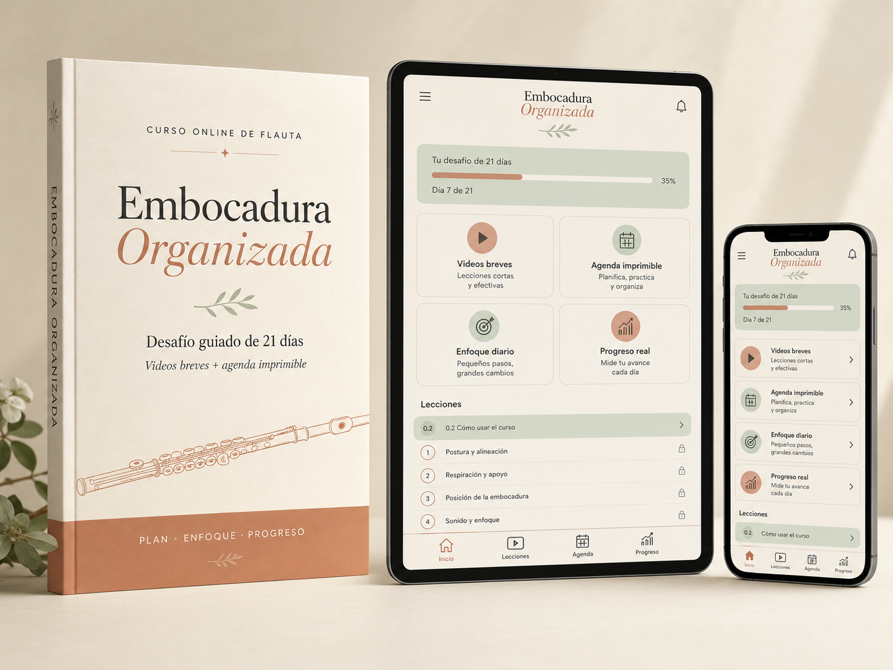

Experiencias reales dentro del desafío
El punto de partida
¿Sientes que estudias tu sonido por ensayo y error?
- Tus graves pierden cuerpo o estabilidad.
- Los agudos aparecen tensos.
- Sientes que gastas demasiado aire.
- Tu sonido cambia de un día a otro.
- Cuando algo no funciona, no sabes exactamente qué corregir.
- Repites ejercicios, pero no siempre comprendes qué deberías observar.
- Dispones de poco tiempo y necesitas una práctica mejor organizada.
No necesitas acumular más ejercicios. Necesitas comprender qué observar, qué ajustar y por qué.
Una forma distinta de estudiar
No necesitas estudiar más. Necesitas estudiar con un método.
Embocadura Organizada propone un recorrido progresivo para comprender la relación entre la embocadura, el aire, la respiración, el cuerpo y el sonido.
Durante 21 días no trabajarás solamente para que una nota “salga”. Aprenderás a observar las causas que afectan la emisión y a elegir cada ejercicio con una intención concreta.
Comprender antes de repetir.
Organizar antes de hacer fuerza.
El método completo
Todo lo que necesitas para dejar de estudiar tu sonido al azar
1
Videos breves y guiados
Lecciones prácticas para comprender cada concepto y llevarlo inmediatamente a la flauta.
2
Manual completo de 76 páginas
Las 21 lecciones organizadas paso a paso, con objetivos, explicaciones, ejercicios, observaciones, errores frecuentes, recordatorios y rutinas de práctica.
3
Recorrido progresivo de 21 días
Un proceso que avanza desde la percepción y liberación de tensiones hasta la respiración, el apoyo, los armónicos, el vibrato, la articulación, los registros y la aplicación musical.
4
Agenda imprimible
Una estructura sencilla para integrar la práctica a una vida adulta con trabajo y otras responsabilidades.
5
Diagnóstico y tracker del sonido
Recursos para registrar tensión, estabilidad, claridad, flexibilidad y sensaciones corporales durante el proceso.
6
Acceso inmediato en Hotmart
Avanza a tu ritmo y vuelve al contenido cada vez que necesites revisar un concepto.

El recorrido de 21 días
De observar tu embocadura a llevar el trabajo a la música
Reconocer el punto de partida
- Reconocer la embocadura mediante el tacto.
- Detectar zonas de tensión.
- Liberar la musculatura facial.
- Comprender el espacio interno de la boca.
Construir una base disponible
- Estabilidad y puntos de apoyo.
- Respiración y temperatura del aire.
- Reducción de movimientos innecesarios.
- Centro de gravedad y apoyo.
Ampliar los recursos del sonido
- Frullato.
- Armónicos.
- Whispertones.
- Cantar y tocar.
- Vibrato.
Integrar técnica y expresión
- Articulación y preparación del sonido.
- Unión mediante el aire.
- Registro grave y registro agudo.
- Sonorité.
- Aplicación a la melodía.
No se trata de buscar una embocadura idéntica para todas las personas. El método te ayuda a comprender cómo está organizada la tuya y a desarrollar recursos más conscientes.
Un cambio de criterio
Lo que empezarás a desarrollar con el método
Antes de organizar tu práctica
- Corriges según la intuición del momento.
- Pruebas ejercicios aislados.
- Aprietas cuando el sonido no responde.
- Confundes la causa con el síntoma.
- No sabes qué observar al repetir.
Con una práctica organizada
- Sabes qué observar antes de intervenir.
- Reconoces señales de aire, tensión y estabilidad.
- Relacionas el sonido con el cuerpo y la respiración.
- Eliges ejercicios con una intención concreta.
- Estudias con más criterio y menos desgaste.
Una práctica para la vida real
Este desafío fue creado para ti si…
Hacer música por disfrute no significa hacerlo sin profundidad.
- Trabajas y no puedes dedicar varias horas diarias a la flauta.
- No vives de la música, pero quieres hacerla bien.
- Buscas una guía seria sin entrar en una relación rígida con el instrumento.
- Quieres comprender tu sonido, no limitarte a repetir ejercicios.
- Valoras estudiar con técnica, profundidad y claridad.
- Necesitas que la práctica pueda convivir con tu vida adulta.
- Quieres recuperar una sensación de dirección al estudiar.
Con honestidad
Este desafío probablemente no es para ti si…
- Buscas una solución instantánea sin practicar.
- Solo quieres una serie de trucos rápidos.
- No tienes interés en observar tus sensaciones corporales.
- Esperas una fórmula rígida que funcione exactamente igual para todas las personas.
Valentina Galaz
Por qué creé Embocadura Organizada
Soy Valentina Galaz, flautista, docente y creadora de Escuela de Flautistas.
A lo largo de mi experiencia como intérprete y profesora he comprobado que muchas dificultades de sonido no se resuelven acumulando ejercicios, sino aprendiendo a observar con mayor precisión.
Creé Embocadura Organizada para ofrecer una guía progresiva a flautistas adultos que quieren estudiar con profundidad, pero necesitan que ese estudio también sea claro, posible y compatible con su vida cotidiana.
Mi propósito no es imponerte una embocadura ideal. Es ayudarte a comprender mejor tu cuerpo, tu aire y tu sonido para que puedas tomar decisiones con más criterio.
Más de 20 años enseñando flautaMás de 500 alumnos onlineLicenciada en Flauta Traversa
Acceso inmediato
Accede al método completo por USD 39
Incluye el recorrido guiado de 21 días, los videos, el manual completo, la agenda imprimible, el diagnóstico inicial y el tracker del sonido.
USD 39Un solo pagoAcceso inmediato mediante HotmartEstudia a tu ritmoVuelve al material cuando lo necesites
Preguntas frecuentes
Antes de comenzar
¿Necesito tener un nivel avanzado?
No. El método está pensado para flautistas que ya producen sonido y quieren comprender mejor cómo organizarlo. No necesitas ser profesional ni tener un nivel avanzado.
¿Cuánto tiempo necesito cada día?
Las prácticas están pensadas para realizarse en menos de 20 minutos al día. Puedes adaptar el tiempo a tu disponibilidad y momento musical.
¿Debo completar obligatoriamente una lección diaria?
No. Los 21 días proponen un orden, no una exigencia rígida. Puedes detenerte, repetir una lección y continuar cuando estés listo.
¿El desafío sirve si tengo poco tiempo?
Sí. Fue creado especialmente para integrar una práctica breve y enfocada a una vida adulta con trabajo y otras responsabilidades.
¿Qué materiales incluye?
Incluye videos guiados, un manual de 76 páginas con las 21 lecciones, agenda imprimible, diagnóstico inicial y tracker del sonido.
¿Cómo recibo el acceso?
Después de realizar la compra, recibes acceso inmediato al contenido mediante la plataforma Hotmart.
¿Puedo volver a ver las clases?
Sí. Puedes avanzar a tu ritmo y volver al contenido cuando necesites revisar un concepto.
¿Se trabaja solamente la embocadura?
No. El recorrido relaciona la embocadura con el aire, la respiración, el cuerpo, la resonancia, la articulación, los registros y la aplicación musical.
¿Necesito imprimir el manual?
No. Puedes consultarlo en formato digital. La agenda y los recursos de registro también pueden usarse de la manera que resulte más práctica para ti.
¿En cuánto tiempo veré resultados?
Los cambios dependen del punto de partida, la continuidad y la forma de practicar de cada persona. El recorrido está diseñado para ayudarte a desarrollar mayor percepción, organización y criterio durante 21 días, pero el material también puede repetirse y consultarse posteriormente.
Embocadura Organizada
Tu sonido no cambia por casualidad
Cambia cuando dejas de corregir al azar y empiezas a estudiar con criterio.
Embocadura Organizada te ofrece un recorrido claro para observar, comprender y reorganizar tu práctica durante 21 días.
USD 39Acceso inmediato mediante Hotmart.